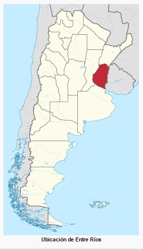

Nacimiento
| Fecha de naciiento | 3 de septiembre de 1949 |
| Lugar | Entre Rios, Villa Domíngues |
| País | Argentina |
| Nacionalidad(es) | Argentina, Colombia |
| Altura | 1.76 |
Entre Ríos es una de las veintitrés provincias que componen la República Argentina. Políticamente forma parte de la Región Centro, y geográficamente es un componente de la Mesopotamia argentina, conformada por los ríos Uruguay y Paraná en el Litoral argentino. Limita al sur con la provincia de Buenos Aires, al oeste con la provincia de Santa Fe, al norte con la provincia de Corrientes y al este con la República Oriental del Uruguay. La capital provincial es la ciudad de Paraná.
Con 78 781 kilómetros cuadrados (distribuidos territorialmente en 66 976 km² de tierra firme y 11 805 km² de islas y tierras anegadizas), es la decimoséptima provincia más extensa del país, ocupando el 2,83 % de la superficie total del mismo.
A menudo se la considera como una provincia de carácter «insular», por estar rodeada por ríos y arroyos. Sus principales accesos están constituidos por puentes y un túnel subfluvial. La red de agua superficial y profunda, a través de acuíferos y apta para el consumo inmediato, es hasta 12 veces mayor que en cualquier otra provincia argentina.
